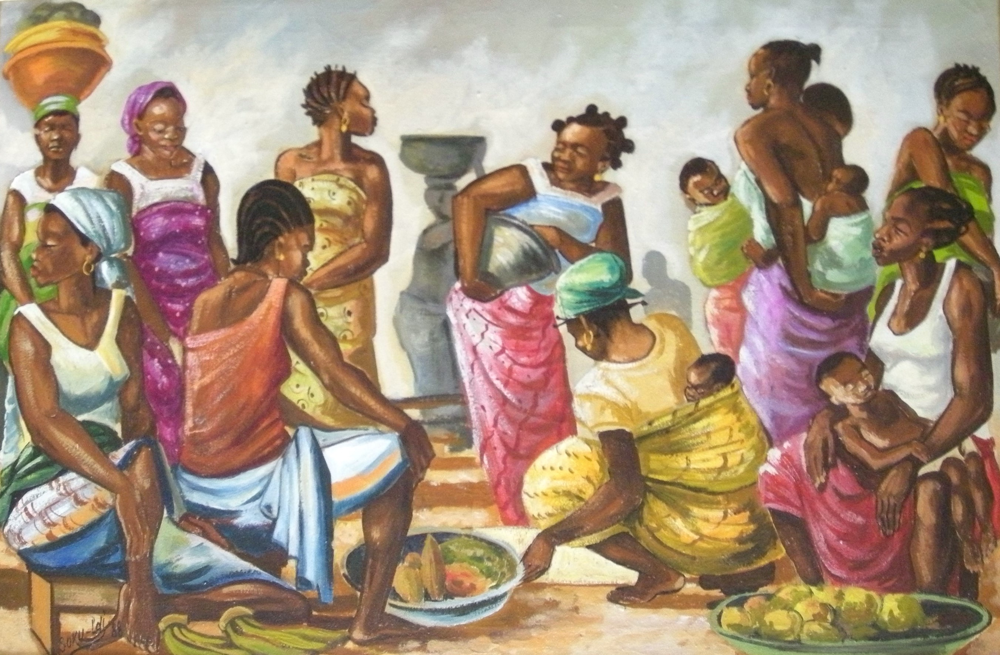

Soku Ldj
fl. 1980s-1990s
Artist Biography
Soku Ldj was an artist whose work, usually oil on canvas, was part of a post-1960 school of popular art in the Democratic Republic of Congo. A particularly fine example of Soku Ldj’s work, a 1987 oil titled ‘Portrait of Colleagues’ showing fellow artists in Lubumbashi, is held by the Royal Museum for Central Africa (RMCA) in Tervuren, Belgium. This was included in a major group show called Congo Art Works: Popular Painting that showed at the Centre for Fine Arts (BOZAR) in Brussels in 2016/17 and then travelled to the Garage Museum of Contemporary Art in Moscow in 2017. Three 1991 paintings by Soku are held in the collection of Bogumil Jewsiewicki, which was catalogued under the title Popular Congolese Art by the University of Calabria, Italy. The Jewsiewicki collection formed the basis for an exhibition called Congo Stars which included works by Soku and was shown at Tubingen, Germany and Graz, Austria in 2018 and 2019. The most recent showing internationally of a Soku Ldj painting was in Congolese: Self-portrait, Congolese painting 1960-1990 at Zamek Cultural Centre, Poznan, Poland in 2021.

Untitled, 1988